리눅스마스터-1급 (2008-01-20 기출문제)
1과목: 리눅스 실무의 이해
1. 리눅스 운영체제의 주요 역할에 대한 설명으로 틀린 것은?
- 사용자들이 하드웨어 자원을 공유할 수 있도록 한다.
- 시스템 자원을 스케줄링하여 효율적으로 활용할 수 있게 한다.
- 오류의 발생을 막고 복구를 지원한다.
- 컴퓨터의 소프트웨어에 한해서 제어한다.
(정답률: 68%)

2. 다음 최근 운영체제의 특징들을 나열한 것 중 틀린 것은?
- 다중사용자시스템 - 동시에 여러 사용자가 접속하여 시스템을 사용할 수 있도록 한다.
- 다중작업시스템 - 여러 사용자가 여러 가지의 작업을 동시에 수행할 수 있다.
- CUI(Character user Interface)위주의 인터페이스 - 특별한 경우를 제외하고는 CUI 환경에서 모든 작업을 한다.
- 고성능의 프로세서에 최적화 - 전원 및 자원 관리가 매우 효율적이고 프로세서의 성능이 최대한 발휘될 수 있는 실행 환경을 제공하게 되었다.
(정답률: 63%)
3. 리눅스 시스템 성능을 나타내는 요소에 대한 설명으로 틀린 것은?
- 사용 가능도(Availability) : 한 시스템에서 최대로 실행 가능한 프로그램 수를 나타낸다.
- 신뢰도(Reliability) : 시스템이 얼마나 정확하게 작동되는지를 나타낸다.
- 반환 시간(Turnaround Time) : 작업이 제출되어 결과를 얻을 때까지의 총 소요 시간을 말한다.
- 처리 능력(Throughput) : 컴퓨터가 단위 시간당 얼마나 많은 일을 할 수 있는지의 정도를 나타낸다.
(정답률: 48%)
4. 다음 중 GPL(General Public License)에 대한 설명으로 틀린 것은?
- GNU 정신에 입각하여 모든 프로그램의 소스를 공개하자는 것이 주된 목적이다.
- GNU 정신에 입각한 소스 공개를 전제로 누구나 마음대로 사용할 수 있으나 다른 사람에게 돈 받고 판매는 불가능하다.
- 프로그램을 마음대로 배포, 복사, 수정할 수 있으며, 수정한 프로그램 역시 GPL을 가지도록 하는 라이센스를 말하는 것이다.
- 소프트웨어뿐만 아니라 일반적인 저작권에 대해서 Copyright에 반대한다는 의미로 Copyleft라는 말도 많이 쓰이고 있다.
(정답률: 55%)
5. 다음은 리눅스 배포판의 종류 중 무엇에 관한 설명인가?
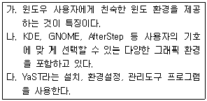
- 슬랙웨어
- 데비안 리눅스
- 맨드레이크
- 수세리눅스
(정답률: 49%)
6. 다음은 RAID의 형태별 분류 중 무엇에 관한 설명인가?
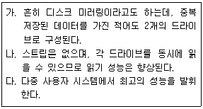
- RAID-0
- RAID-1
- RAID-7
- RAID-3
(정답률: 64%)
7. 다음 중 리눅스에서 여러 운영체제 중 필요한 운영체제를 골라 사용할 수 있는 부트 매니저가 아닌 것은?
- LILO
- GRUB
- Loadlin
- MultiBR
(정답률: 37%)
8. 리눅스에서 시스템에 관한 각종 환경 설정에 연관된 파일들과 디렉토리들을 가진 디렉토리를 무엇이라 하는가?
- /bin
- /boot
- /etc
- /prob
(정답률: 82%)
9. 다음 중 리눅스 시스템을 리부팅 하기위한 명령어와 거리가 가장 먼 것은?
- halt
- init 6
- reboot
- shutdown -r now
(정답률: 70%)
10. 다음 중 CPU의 구성요소가 아닌 것은?
- 주기억장치(Main Memory Unit)
- 보조기억장치(Secondary Memory Unit)
- 제어장치(Control Unit)
- 산술논리연산장치(Arithmetic & Logic Unit)
(정답률: 65%)
11. 현재 사용 중인 sh 쉘을 tcsh 쉘로 변경하고자 할 때의 명령으로 맞는 것은?
- su tcsh
- sh
- tcsh
- ch sh tcsh
(정답률: 50%)
12. 리눅스의 쉘(shell)에 대한 설명으로 틀린 것은?
- 쉘은 각 운영체제와 사용자가 대화하는 중간 창구 역할을 한다.
- 쉘은 DOS의 command.com 및 윈도우즈의 탐색기와 비슷하다.
- 컴퓨터 운영체제의 가장 중요한 핵심으로서, 운영체계의 다른 모든 부분에 여러 가지 기본적인 서비스를 제공한다.
- 표준 유닉스 명령 인터프리터로서 사용자가 입력한 명령을 해석하여 또 다른 프로그램을 수행하라는 명령으로 해석한다.
(정답률: 58%)
13. 다음 중 X윈도우에 대한 설명으로 틀린 것은?
- 두 개의 개별 소프트웨어 부분에 의해 제어되는 서버/클라이언트 시스템이다.
- X 프로토콜은 서버와 클라이언트 사이에서 통신되는 Request, Reply, Event, Error의 기본 메시지이다.
- Xtoolkit의 종류에는 Xaw, XView, Motif, XtIntrinsics 등이 있다.
- Xlib는 XFree86의 4.4rc2 버전을 X.org기구에서 가져다가 개발한 것이다.
(정답률: 36%)
14. 프로세스(Process)에 관련된 용어에 대한 설명 중 틀린 것은?
- 프로그램(Program) : 특정 기능을 수행하기 위한 명령어 집합
- 스레드(Thread) : 프로세스의 일부 특정 데이터만 가지고 있는 프로세스를 말하며, 프로세스보다 작은 실행 단위
- 프로세서(Processor) : 연산을 수행하고 처리하기 위한 자원, 보통 CPU를 말함
- 작업(Job) : 특정 기능을 수행하기 위한 명령어의 조합
(정답률: 57%)
15. 다음 중 시스템이 제어 불가능일 때, shutdown 명령어를 이용하여 시스템 종료시 사용되는 옵션으로 알맞은 것은?
- -n
- -p
- -h
- -k
(정답률: 23%)
16. OSI 7 Layer 에서 최하위 계층으로, 전기적인 신호를 전송해 주는 전송매체로 생각할 수 있는 계층으로 알맞은 것은?
- 물리 계층(Physical Layer)
- 네트워크 계층(Network Layer)
- 세션 계층(Session Layer)
- 표현 계층(Presentation Layer)
(정답률: 76%)
17. 다음 중 프로토콜이 다른 통신망을 상호 접속하기 위한 장치이며 프로토콜 변환기의 일종으로 볼 수 있는 장비는 무엇인가?
- 리피터(repeater)
- 스위치(switch)
- 라우터(router)
- 게이트웨이(gateway)
(정답률: 56%)
18. 다음에서 설명하고 있는 토폴로지의 종류로 알맞은 것은?
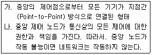
- 버스 (Bus)
- 스타 (Star)
- 링 (Ring)
- 라인 (Line)
(정답률: 67%)
19. TCP/IP 프로토콜중 TCP 헤더의 구성필드에 대한 설명 중 틀린 것은?
- Source Port/Destination Port : SP는 보내는 측 포트번호, DP는 목적지 포트 번호이다.
- Sequence Number : TCP 세그먼트안에 데이터의 송신바이트 흐름의 위치를 나타낸다.
- HLEN : TCP 세그먼트의 길이를 정의한다.
- RESERVED : 세그먼트의 용도와 내용을 결정하기 위해서 사용된다.
(정답률: 38%)
20. traceroute 명령을 이용하여 얻을 수 없는 정보는?
- 목적지까지 경유하는 홉(Hop)의 주소
- 목적지까지 경유하는 홉(Hop)의 개수
- 목적지까지 경유하는 홉(Hop)의 소유자
- 목적지까지 소요된 경과 시간
(정답률: 48%)
2과목: 리눅스 시스템 관리
21. 다음 중 su 명령에 대한 설명으로 틀린 것은?
- su 명령에 사용자 계정이 주어지지 않을 경우 슈퍼 유저인 root로 설정된다.
- 하나 이상의 계정을 갖고 있는 경우, 다른 계정으로도 변경할 수 있다.
- 계정변경 후 원래의 계정으로 돌아오기 위해서 quit 명령어를 사용한다.
- 일반계정으로 접속하여 루트의 권한을 획득 할 수 있다.
(정답률: 63%)
22. 로그인 계정을 확인하기 위하여「whoami」 또는 「who am i」를 사용한다. 이 중에서 who am I를 사용할 경우 확인 할 수 있는 사항이 아닌 것은?
- 로그인 이름
- 로그인한 가상콘솔
- 현재 시간
- 로그인 날짜
(정답률: 48%)
23. ihd 사용자에 대해 어떠한 패스워드 또는 패스워드를 입력하지 않아도 로그인 가능하도록 하기위한 passwd 명령의 옵션으로 알맞은 것은?
- -k .
- -x
- -d
- -S
(정답률: 32%)
24. 루트로 접속 후 로그아웃을 하지 않고 그대로 둔다면, 위험할 수 있다. 이를 방지하기 위해 일정 시간 후 루트계정에서 자동으로 로그아웃 되도록 /etc/profile 또는 ~/.bash_profile에 사용하는 환경 변수로 알맞은 것은?
- QUIT
- ROOTOUT
- EXIT
- TMOUT
(정답률: 67%)
25. 다음 각 명령어에 대한 설명으로 바르게 짝지어진 것은?
- usermod - 사용자 기본 그룹, 패스워드 변경
- chdir - 사용자 홈디렉터리 변경
- chage - 사용자 패스워드 만료기간 변경
- change - 사용자 콘솔 변경
(정답률: 56%)
26. 다음 내용에 대한 설명 중 틀린 것은?
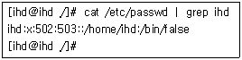
- 로그온 이름이 ihd 이다.
- 이 계정은 현재 로그온이 가능하다.
- 홈디렉터리는 /home/ihd 이다.
- 이 계정의 그룹 ID는 503 이다.
(정답률: 63%)
27. 리눅스에서 디렉토리는 파일과 마찬가지로 취급한다. 디렉토리에 대한 다음 설명 중 틀린 것은?
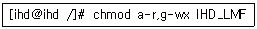
- 트리(Tree) 구조의 계층적 구조를 가진다.
- 디렉토리는 다른 디렉토리를 포함할 수 없다.
- ‘..’은 상위 디렉토리를 가리킨다.
- 디스크에 저장되어 있으면서 다른 파일을 조직하고 액세스하는데 필요한 정보를 가지고 있다.
(정답률: 67%)
28. 리눅스 파일 시스템을 점검하고 수리하는 fsck 옵션에 대한 설명 중 틀린 것은?
- -A : /etc/fstab 파일에 표시된 모든 파일 시스템을 한 번씩 모두 점검한다.
- -R : -A 플래그와 같이 사용될 때 루트 파일 시스템을 포함 하도록 한다.
- -N : 실행은 하지 않고, 어떤 작업을 할 것인지만 보여준다.
- -T : 시작할 때 제목을 보여주지 않는다.
(정답률: 19%)
29. 허가권 755로 지정된 IHD_LMF 파일에 대해 아래의 명령어를 실행한 후 변경된 허가권 중 알맞은 것은?
명령어 : [ihd@ihd /]# chmod a-r,g-wx IHD_LMF
- -wxr--r-x
- -wx-----x
- -wx-w---x
- rwxr--r-x
(정답률: 50%)
30. 다음 sticky bit에 대한 설명 중 틀린 것은?
- chmod o+t 파일명으로 sticky bit를 적용시킨다.
- 허가권의 절대적 표기는 1000 이다.
- 타인의 실행 퍼미션이 t로 표기된다
- 파일에 실행 권한이 있는 경우 T로 표기된다.
(정답률: 52%)
31. 다음 파일 권한에 대한 설명으로 틀린 것은?
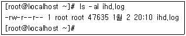
- 이 파일의 소유자는 root이다.
- 이 파일은 현재 실행 모드가 없다.
- 이 파일은 소유자만이 내용을 수정 할 수 있다.
- 파일 소유자 외 나머지 사용자들은 접근권한이 없다.
(정답률: 75%)
32. 시스템 관리자인 홍길동은 리눅스 시스템의 보안을 위해 패스워드를 변경하고자 한다. 다음중 패스워드를 주기적으로 변경하기 위한 명령어로 알맞은 것은?
- chsh
- chage
- chmod
- chpasswd
(정답률: 45%)
33. 리눅스 파일시스템에 대한 설명 중 틀린 것은?
- 파일 구조는 유형, 파일허가, 링크수, 소유자, 파일크기, 파일명 등으로 구성된다.
- 2진 데이터 파일은 파일의 종류 중 특수파일에 해당된다.
- 파일 링크를 통해 효율적인 파일 관리를 수행 할 수 있다.
- CD-ROM 드라이브도 파일시스템으로 인식한다.
(정답률: 37%)
34. 리눅스 파일시스템에서 파일의 이름을 제외한 해당 파일의 모든 정보를 가지고 있는 것은?
- 아이노드(Inode)
- 슈퍼블록(super block)
- 디렉토리 블록(Directory block)
- 데이터 블록(Data block)
(정답률: 40%)
35. 다음 중 그룹 계정 관리에 관한 명령어와 설명이 알맞은 것은?
- group : /etc/group에 등록되어 있는 그룹을 조회한다.
- groupadd -g 700 ihdcp : 그룹 id를 700으로 그룹명 ihdcp을 생성한다.
- groupmod -n ihdcp ihd : ihdcp 그룹의 이름을 ihd로 변경한다.
- groupdelete ihdcp : ihdcp이라는 그룹을 삭제한다.
(정답률: 36%)
36. 다음 데몬과 관련된 설명 중 틀린 것은?
- httpd는 웹 서비스를 해주는 데몬이다.
- 수퍼데몬은 INET 방식으로 실행된다.
- INET 방식은 클라이언트로부터 요청이 있을 때 프로세스가 생성되는 방식이다.
- 스탠드얼론(Stand alone) 방식은 메모리에 계속 상주하며 서비스하는 방식이다.
(정답률: 55%)
37. 다음은 top에 대한 설명 중 알맞은 것은?
- i옵션을 사용하면 좀비(Zombie)나 휴지(Idle) 상태를 포함하여 표시된다.
- top이 시행된 상태에서 스페이스를 사용하면 명령프롬프트로 돌아온다.
- p옵션을 이용하여 해당 id에 대한 프로세스를 제외하고 모니터할 수 있다.
- kill 명령을 사용할 필요없이 top상태에서 k를 입력하면 PID를 입력하여 프로세스를 종료 할 수 있다.
(정답률: 54%)
38. 백그라운드 프로세스에 대한 설명 중 틀린 것은?
- 백그라운드로 실행하려면 명령어 뒤에 &를 적는다.
- 백그라운드로 동작하는 프로세스는 ps 명령어로 확인할 수 없다.
- 백그라운드 프로세스는 키보드 입력 없이 장기간 실행될 경우에 주로 사용된다.
- 백그라운드 프로세스는 즉시 명령 대기상태가 되어 다른 명령을 받아들일 준비를 한다
(정답률: 65%)
39. 다음 nice 명령어에 대한 설명 중 알맞은 것은?
- nice에 의해 조정될 수 있는 범위는 -19에서 20까지 이다.
- nice 명령수행 시 조정 수치가 생략되면 우선권은 10만큼 감소한다.
- nice는 스케줄링 우선권을 변경하여 프로그램을 수행한다.
- 가장 높은 우선권은 20이다.
(정답률: 44%)
40. 다음 RPM(Redhat Package Manager)에 대한 설명 중 틀린 것은?
- 패키지 정보 검색
- 패키지 자동 설치
- 패키지 오류 수정
- 업그레이드 기능
(정답률: 54%)
41. 다음에서 설명하는 명령어로 알맞은 것은?
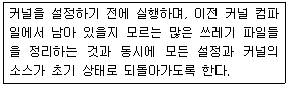
- make clean
- make config
- make dep
- make mrproper
(정답률: 30%)
42. 리눅스에서 새로운 하드디스크를 장착하고, 설정하는 과정에 대한 보기의 내용을 순서대로 나열한 것 중 알맞은 것은?
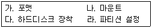
- 다 -> 라 -> 가 -> 나
- 다 -> 가 -> 라 -> 나
- 다 -> 나 -> 라 -> 가
- 다 -> 라 -> 나 -> 가
(정답률: 35%)
43. 다음 리눅스 커널 매커니즘에 대한 설명 중 틀린것은?
- insmod 명령을 사용하여 수동으로 모듈을 커널에 추가할 수 있다.
- 모듈은 커널 코드와 똑같은 권한과 책임을 진다.
- 커널은 모듈을 로드할 때, 엄격한 버전 검사를 통해 문제를 선택적으로 막을 수 있다.
- 모듈이 더 이상 사용되지 않을 경우, umount에 의해 시스템에서 자동으로 제거된다.
(정답률: 61%)
44. 다음은 프린터 설정 유틸리티 프로그램의 설정값이 저장되는 printcap 파일의 일부이다. 설정 파일에 대한 설명 중 틀린 것은?
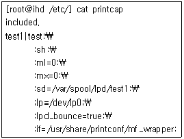
- sd : spool directory를 말하는 것으로 프린트할 데이터를 프린터에 보내기 전에 임시로 저장할 디렉토리 이다.
- mx : 인쇄 가능한 최대 파일 크기를 나타낸다.
- sh : suppress headers를 말하며 디폴트는 헤더 출력을 한다.
- if : 입력 필터를 말한다
(정답률: 33%)
45. 다음 설명하는 내용에 해당하는 명령어로 알맞은 것은?
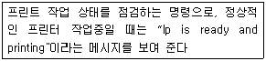
- lpr
- lpq
- lprm
- lpd
(정답률: 47%)
46. 리눅스에서 커널을 업그레이드하여 컴파일 하는 이유로 틀린 것은?
- 시스템 관리 능력의 개선
- 버그 수정
- 하드웨어간의 호환성 유지
- 속도 개선
(정답률: 50%)
47. 리눅스에 하드웨어를 설치함에 있어, 중복될 수 있는 자원으로 알맞지 않은 것은?
- DMA Channels
- IRQs
- I/O Port Addresses
- Slot
(정답률: 37%)
48. 다음 중 mount에 대한 설명으로 알맞은 것은?
- mount 명령어에 -f 옵션을 사용하면 마운트 가능여부를 확인할 수 있다.
- 현재 마운트 되어 있는 정보는 mount명령어를 사용하여 확인할 수 있으며, /etc/fstab파일의 내용과 동일하다.
- mount 명령으로 마운트된 디스켓은 unmount로 마운트를 해제할 수 있다.
- /dev/hdb1을(ext3로 포맷되어 있음) /ihd에 마운트 하기위한 명령어는 “mount -t ext3 /ihd /dev/hdb1” 이다.
(정답률: 12%)
49. 모듈을 현재 실행중인 커널에서 사용하기 위해 로드하는 명령어로 알맞은 것은?
- addmod
- rmmod
- insmod
- module
(정답률: 60%)
50. PNP가 지원되지 않는 사운드 카드를 설정하려고 한다. 이를 위해 필요한 정보 중 틀린 것은?
- 직접 메모리 액세스 채널(DMA)
- 인터럽트 번호(IRQ)
- 입출력 주소(I/O Address)
- 버스 유형(Bus Type)
(정답률: 47%)
51. 다음 중 로그파일 관리 툴인 logrotate에 대한 설명으로 틀린 것은?
- 지정한 기간이 지나면 다른 파일로 대체한다.
- 로그 파일을 압축해서 보관한다.
- 지정한 용량에 도달하면 다른 파일로 순환시킨다.
- 작업시 에러가 발생했을 때 해당 서비스를 중지 시킨다.
(정답률: 52%)
52. 다음 중 /var/log/lastlog에 대한 설명으로 알맞은 것은?
- “lastlog -u 계정명” 명령을 사용하여 특정 계정에 대한 최근 접속정보를 확인할 수 있다.
- 일반적으로 /var/log/lastlog 파일은 cat나 vi 등을 이용하여 확인할 수 있다.
- lastlog는 /etc/passwd파일에 정의되어 있는 모든계정의 마지막 접속 정보를 출력해 준다.
- “lastlog -t 30” 명령을 이용하여 최근 접속정보 중 30개의 항목에 대해서 확인이 가능하다.
(정답률: 24%)
53. 다음은 시스템 로그 데몬(syslogd)이 실행 될 때 참조되는 환경파일인 syslogd.conf 파일의 일부분이다. 이에 대한 설명 중 틀린 것은?
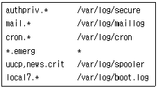
- /var/log/secure 파일에 ftp 또는 ssh 등으로 접속되는 로그가 기록된다.
- /var/log/boot.log 파일에 시스템 부팅시의 로그 메시지가 기록된다.
- /var/log/maillog 파일에 메일에 의해 발생되는 메시지가 기록된다.
- /var/log/cron 파일에 로그인과 같은 사용자 인증에 관한 로그가 기록된다.
(정답률: 79%)
54. 다음 중 액세스 로그의 구성요소가 아닌 것은?
- Host
- Status Code
- HTTP Request Field
- Mac Address
(정답률: 41%)
55. 다음 중 시스템 백업을 수행할 때 사용하는 명령어가 아닌 것은?
- dump
- cpio
- dd
- backup
(정답률: 39%)
56. 다음 중 PAM에 대한 설명으로 틀린 것은?
- PAM은 Pluggable Authentication Module의 약자이다
- PAM은 사용자 정보의 저장 방법과 관계없이 프로그램들이 투명하게 사용자를 인증하게하여 혼잡을 제거하였다.
- PAM의 구성 파일은 /bin/pam.d 에 저장되어 있다.
- PAM의 가장 큰 장점은 유동성이다.
(정답률: 31%)
57. 다음에서 설명하는 백업의 종류로 알맞은 것은?
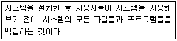
- 단순 백업
- 변경분 백업
- 다단계 백업
- 데이 제로 백업
(정답률: 56%)
58. 다음 ssh에 대한 설명 중 틀린 것은?
- 네트워크의 다른 컴퓨터에 로그인할 수 있다.
- 두 호스트간의 통신 암호화와 사용자 인증을 위하여 공개키 암호 기법을 사용한다.
- 원격시스템에서 명령을 실행할 수 있지만, 다른 시스템으로 파일을 복사할 수는 없다.
- 강력한 인증 방법과 안전하지 못한 네트워크에서 안전하게 통신을 할 수 있는 기능을 제공한다.
(정답률: 69%)
59. 다음 중 dump 명령에 대한 설명으로 알맞은 것은?
- 소프트 링크 혹은 마운트된 다른 파일 시스템과 같이 다수의 파일 시스템이 연결된 디렉토리까지 백업한다.
- dump는 데이프 드라이브에 백업할 수 없다.
- 0-9까지의 레벨 수준을 설정하여 백업을 진행 할 수 있다.
- dump의 백업 레벨 수준 “9”는 풀백업을 의미 한다.
(정답률: 46%)
60. 다음 중 cpio 명령어 사용시 동일한 이름을 가진 기존의 파일 위에 겹쳐 쓰도록 파일을 복사하도록 하기위한 것으로 "-o"와 함께 사용할 수 없는 옵션으로 알맞은 것은?
- -c
- -u
- -p
- -V
(정답률: 24%)
3과목: 네트워크 및 서비스의 활용
61. 다음 아파치의 주요 디렉토리에 대한 설명 중 틀린 것은?
- /bin : 아파치 사용시에 필요한 유틸리티들이 들어 있다.
- /cgi-bin : cgi 스크립트가 있는 곳이다.
- /conf : 아파치 서버의 여러 가지 설정 파일들이 있다.
- /icons : 아파치 서버를 이용한 웹페이지 구성시 아이콘은 이 디렉토리에 저장해야만 한다.
(정답률: 30%)
62. 아파치의 가상호스트 기능 중 IP 기반 가상호스팅(IP-based Virtual Hosting)에 대한 설명으로 틀린 것은?
- 한 개의 IP 주소를 이용하여 웹호스팅 서비스를 할 때에 사용되는 기법이다.
- IP 기반으로 서비스를 하기 위해서는 먼저 가상의 IP가 필요하다.
- ifconfig와 route 명령어를 이용하여 사용자가 가지고 있는 LAN카드에 가상의 IP를 추가해 주어야 한다.
- IP 주소를 기반으로 한 서비스이다.
(정답률: 23%)
63. 다음 아파치 가상호스트 설정에 관련된 설명 중 틀린 것은?
- ServerName : 서버의 계정 디렉토리 위치를 기입한다.
- ServerAdmin : 가상 호스트 부분에 발생되는 에러 등을 관리자에게 이메일로 전해주기 위한 이메일 주소를 말한다.
- TransferLog : 어느 위치에 접속 로그를 남길것인지 결정한다.
- NameVirtualHost : 가상 호스트로 사용하고자 하는 IP 주소를 기입해 준다.
(정답률: 45%)
64. 다음 중 SSL에 대한 설명으로 알맞은 것은?
- SSL은 Secure Sockets Level의 약자이다.
- 업계 표준 프로토콜로서 미국 넷스케이프 커뮤니케이션즈가 개발하였고, 마이크로소프트등은 채택하지 않고 있다.
- SSL은 웹 제품뿐만 아니라 파일 전송 규약(FTP) 등 다른 TCP/IP 응용 프로그램에 적용할 수 있다.
- 아파치에서 SSL을 사용할 경우 API모듈과 상관없이 운영할 수 있다.
(정답률: 46%)
65. 다음 중 MySQL을 table grant 권한 없이 실행하는 명령으로 알맞은 것은?
- mysqld_safe
- mysqld_safe &
- mysqld_safe --skip-grant-table &
- mysqld_safe --skip-nogrant-table &
(정답률: 50%)
66. MySQL의 소스 컴파일 설치과정 중 configure에서 한글로 메시지를 출력하도록 하기위해 설정해야 하는 옵션으로 알맞은 것은?
- --prefix
- --with-charset
- --localstatedir
- --sysconfdir
(정답률: 74%)
67. 다음 MySQL 접속 명령어 형식에서 ( )안에 들어갈 내용으로 알맞은 것은?
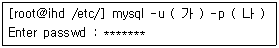
- (가)MySQL 계정명, (나)접속할 포트번호
- (가)시스템 계정명, (나)접속할 데이터베이스명
- (가)MySQL 계정명, (나)접속할 데이터베이스명
- (가)시스템 계정명, (나)서버 IP 주소
(정답률: 42%)
68. 다음 samba에 대한 설명 중 틀린 것은?
- 기본적으로 삼바 서버를 서비스로 운용하기 위해서는 전체 설정과 공유 정의로 나눌 수 있다.
- 환경 설정시 “#”는 주석을 가리킨다.
- 삼바 서버를 작동하기 위해서는 삼바 데몬을 띄워야 한다.
- 환경 설정시 “;”는 문장의 끝을 의미한다.
(정답률: 34%)
69. samba 설정 파일의 내용 중 아래의 내용에 대한 설명으로 틀린 것은?
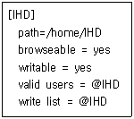
- IHD 라는 공유 디렉토리는 IHD 그룹 내의 사용자만 쓰기가 가능하다.
- IHD 그룹이외의 사용자는 로그인 기능과 읽기 기능만이 가능하다.
- 로그인 후 공유 디렉토리의 리스트를 보여준다.
- 공유된 디렉토리의 이름은 IHD 이다.
(정답률: 48%)
70. 삼바 서버의 보안 모델은 크게 4가지로 구분된다. 다음 중 삼바 서버의 보안 모델로 틀린 것은?
- 서버 레벨
- 로컬 레벨
- 사용자 레벨
- 공유 레벨
(정답률: 38%)
71. 다음 삼바 관련 명령에 대한 설명 중 틀린 것은?
- testparm 명령을 이용하여 smb.conf 파일의 문법적인 오류를 체크한다.
- 삼바 디렉토리에 사용자가 접속되어 있는 상태를 smbstatus 명령을 이용하여 확인할 수 있다.
- smbclient 명령의 -h 옵션은 대상 호스트를 가리킨다.
- smbclient 명령을 이용하여 윈도 서버에 접속 할 수 있다.
(정답률: 36%)
72. 다음 SWAT에 대한 설명 중 틀린 것은?
- Samba Web Administration Tool의 약자로서 웹에서 루트 계정으로 삼바를 설정하는 유틸리티 이다.
- SWAT는 기본적으로 포트 번호 901번을 사용한다.
- 이 도구는 삼바 2.x 버전부터 나오기 시작했다.
- SWAT는 smb.config 파일을 쉽게 다루도록 하고 있다.
(정답률: 45%)
73. NFS(Network File System)에 대한 설명으로 알맞은 것은?
- 정보통신네트워크에 접속되어 있는 다른 컴퓨터에 파일이나 파일시스템을 공용하기 위한 것으로 동일한 운영체제에서 가능하다.
- NFS 서버는 항상 클라이언트가 자신의 자원을 마운트 할 수 있도록 준비하고 있어야 하는데, 이러한 과정을 exporting 이라고 한다.
- NFS는 IBM에서 개발되었으며, 컴퓨터들간의 통신 방법으로 RPC를 사용한다.
- NFS는 흩어져 있는 자원을 하나의 시스템과 같이 공유하는 것이므로 보안성이 강하다.
(정답률: 44%)
74. 다음 NFS에 제공되는 유틸리티 중 틀린 것은?
- showmount
- nfsstat
- nfsstart
- nhfsstone
(정답률: 28%)
75. NFS 서버의 설정 파일인 /etc/exports의 옵션중에서 서버와 클라이언트가 루트 계정을 사용하는 옵션으로 알맞은 것은?
- nobody_squash
- no_root_squash
- root_squash
- all_squash
(정답률: 48%)
76. 다음 중 NFS 마운트할 때 사용되는 옵션과 설명으로 틀린 것은?
- timeo : 클라이언트에서 타임아웃이 발생되고 나서, 다시 재전송 요구를 보낼 때 소요되는 시간
- fg : NFS 서버에 타임아웃이 발생되면 즉각 접속을 중지
- intr : 인터럽트 허용 안함
- retrans : 재전송 횟수를 지정
(정답률: 32%)
77. 다음 중 FTP에 대한 설명으로 틀린 것은?
- FTP도 HTTP나 SMTP 등과 같이 TCP/IP 응용 프로토콜 중 하나이다.
- 인터넷상의 컴퓨터들간에 파일을 교환하기 위한 표준 프로토콜이다.
- FTP의 기본 포트번호는 23번 이다.
- 브라우저를 통해 data.ihd.or.kr FTP 서버에 접속 할 경우 ftp://data.ihd.or.kr로 접속한다.
(정답률: 62%)
78. 다음은 ProFTP의 설정파일인 proftpd.conf 파일의 일부분 이다. 이에 대한 설명으로 틀린 것은?
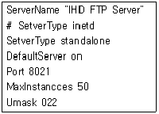
- 해당 FTP 서버는 standalone으로 실행되어 있다.
- 최대 접속 가능한 사용자 수는 50명이다.
- 포트번호 21번을 통해 접속할 수 있다.
- 사용자가 FTP 서버에 접속했을 때 출력되는 서버의 이름은 IHD FTP Server 이다.
(정답률: 72%)
79. ProFTP에서 anonymous 사용자로 접속할 때 클라이언트들이 최대로 접속할 수 있는 수를 30으로 설정하는 것으로 알맞은 것은?
- Maxanonymous 30
- MaxInstances 30
- MaxAllow 30
- MaxClients 30
(정답률: 35%)
80. 다음 중 Sendmail 설정 후 에러여부를 체크하는 명령으로 알맞은 것은?
- sendmail -bi
- sendmail -bd -q1h
- newaliases
- makemap
(정답률: 54%)
81. 다음은 /etc/mail/access 파일의 내용이다. 이에 대한 설명 중 틀린 것은?
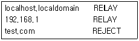
- 192.168.1.x의 로컬네트워크 사용자들은 메일을 보낼 수 있지만, 그 외의 사용자들은 메일을 보낼 수 없다.
- test.com이라는 도메인에서 전송되어지는 모든 메일은 거부된다.
- access 파일은 수정한 후 명령을 수행하여 새로운 DB를 생성해야 한다.
- makemap hash access > access 명령으로 새로운 DB를 생성한다.
(정답률: 24%)
82. 다음은 Sendmail 보안을 위하여 설정파일을 수정 할 수 없도록 속성을 변경하는 명령이다. ( )안에 들어갈 내용으로 알맞은 것은?
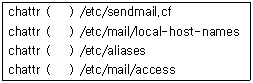
- +i
- no
- +u
- -x
(정답률: 46%)
83. 메일서비스를 위한 컴포넌트 중 사용자가 메일을 보기 위해 사용하는 것으로 알맞은 것은?
- MRA (Mail Receiver Agent)
- MUA (Mail User Agent)
- MTA (Mail Transfer Agent)
- MDA (Mail Delivery Agent)
(정답률: 56%)
84. 다음 xinetd에 대한 설명 중 틀린 것은?
- TCP, UDP 및 RPC 서비스들에 대한 접근 제어
- DoS 공격에 대한 효과적인 억제
- 동시에 작동하는 동일 유형 서버 수에 대한 제한
- 로그 파일 개수에 대한 제한
(정답률: 53%)
85. 다음 중 xinetd 데몬으로 관리할 수 있는 데몬이 아닌 것은?
- telnet
- pop3
- ftp
- arp
(정답률: 47%)
86. DNS의 zone파일에 대한 다음 설명 중 틀린 것은?
- Refresh : 주 DNS 서버와 보조 DNS 서버간의 정보 동기화를 위해 시간 간격을 지정한다.
- A : 한 개의 도메인에 대해 다른 이름을 갖도록 하는 기능이다.
- MX : 해당 호스트의 메일 라우팅 경로를 지시한다.
- NS : 도메인의 네임 서버를 지시한다.
(정답률: 40%)
87. 다음은 DNS 서버의 forward 영역 파일의 설정 내용 중에 메일 서버와 관련된 내용이다. 이에 대한 설명으로 틀린 것은?
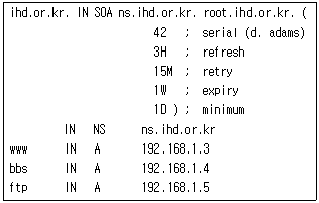
- ihd.or.kr의 네임서버는 ns.ihd.or.kr이다.
- ftp.ihd.or.kr의 IP 주소는 192.168.1.5 이다
- SOA는 해당 도메인(ihd.or.kr)에 대해서 여기서 설정한 네임서버가 모든 정보를 가지고 있음을 선언하는 것이다.
- 해당 도메인(ihd.or.kr)의 관리자 Email 주소는 ns@ihd.or.kr 이다.
(정답률: 65%)
88. DNS는 크게 세 종류로 나누어 생각할 수 있다. 다음 중 DNS 서버의 종류가 아닌 것은?
- 주서버
- 보조 서버
- 캐싱 서버
- 슬레이브 서버
(정답률: 34%)
89. 다음 중 DNS 캐싱(Caching) 서버의 설명으로 알맞은 것은?
- 이 서버는 자체가 도메인에 관련된 데이터 베이스를 가지고 있다.
- 도메인을 등록할 때 통상 이 서버에 등록하게 된다.
- 자체가 도메인에 관련된 데이터베이스를 갖지는 않지만 사용자의 요청에 의해 변환된 정보를 기억하고 있다.
- 주네임 서버의 데이터베이스를 가지고 있으며 주네임 서버에 문제가 생겼을 때 대응하기 위하여 사용한다.
(정답률: 55%)
90. 다음에 기술한 Proxy 서버에 대한 설명 중 틀린 것은?
- 사용자가 웹 브라우저를 이용하여 인터넷 활용시 현저히 느린 속도를 보완해 준다.
- Proxy 서버는 캐시 서버를 만들어 이미 방문한 웹 사이트를 캐시에 미리 저장한다.
- 이전에 방문한 사이트를 접속시 캐시 서버에 저장된 내용을 보여준다.
- Proxy가 서버에 설치되면 클라이언트 PC에서는 별도의 설정이 필요 없다.
(정답률: 65%)
91. 다음 arp에 대한 설명 중 틀린 것은?
- arp는 MAC 주소를 알아낼 때 사용한다.
- arp -d [hostname]을 이용하여 현재 캐시에 있는 특정한 호스트에 대한 MAC 주소의 값을 지운다.
- arp -s를 이용하여 현재 캐시에 있는 특정한 호스트에 대한 MAC 주소의 값을 저장할 수 있다.
- arp -i를 이용하면 지정한 인터페이스의 arp를 확인할 수 있다.
(정답률: 27%)
92. 다음 중 동적으로 IP 주소를 할당해 주는 역할을 하는 것으로 알맞은 것은?
- SMB
- DHCP
- DNS
- NIS
(정답률: 74%)
93. 다음 중 CVS에 대한 설명으로 틀린 것은?
- 각종 파일의 버젼을 쉽게 관리할 수 있도록 도와주는 도구이다
- Apache HTTP server, Mozilla 등의 대표적인 공개 프로젝트가 CVS를 사용한다.
- CVS 역시 같은 파일을 여러 사람이 함께 작업하는 것은 지원하지 않는다.
- CVS의 저장소에는 CVS의 전반적인 설정 사항과 각 프로젝트의 파일들은 물론, 각 파일의 버전 관리에 필요한 정보, 파일별 작업 기록들을 저장하게 된다.
(정답률: 63%)
94. 다음 중 CVS의 기능이 아닌 것은?
- Export
- Branch
- Checkout
- Commit
(정답률: 18%)
95. 다음 CVS 저장소 접근권한 제어에 대한 설명 중 틀린 것은?
- 접근제어 설정은 CVSROOT 디렉토리의 readers와 writers 파일로 한다.
- readers 파일만 존재한다면 파일에 설정된 계정은 읽기만 허용되며, 나머지는 읽기와 쓰기가 가능하다.
- readers와 writers 파일은 CVSROOT 디렉토리에 기본적으로 있으며, 정책에 맞게 수정해주면 된다.
- readers에는 계정이 없고 writers에만 계정이 설정되어 있는 경우 읽기와 쓰기 권한을, 나머지 모든 계정은 읽기만 가능하다.
(정답률: 5%)
96. 다음 중 스니핑에 대한 설명으로 틀린 것은?
- 네트워크를 통과하는 패킷을 도청하여 아이디/암호 등을 비정상적인 방법으로 엿보는 행위 이다.
- 스니핑은 더미허브 환경에서 모든 패킷을 모든 포트에 전달함으로써 쉽게 패킷을 캡쳐할 수 있다.
- 스니핑은 더미허브가 아닌 스위치를 사용함으로써 간단히 대처할 수 있다.
- 인터넷의 표준 프로토콜인 TCP/IP의 전송 방식이 암호화되지 않는 점도 스니핑이 가능한 이유이다.
(정답률: 46%)
97. 다음에 기술한 명령어 중 world-writable(누구나 쓰기 가능) 형식으로 되어 있는 파일을 찾는 것으로 알맞은 것은?
- find / -type f \( -perm -04000 -o -perm -02000 \)
- find / -perm -2 -print
- find / -nouser -o -nogroup -print
- find / -name .rhosts -print
(정답률: 25%)
98. 다음에서 설명하는 내용에 대한 것으로 알맞은 것은?
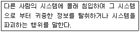
- 해킹
- 크래킹
- 스캐닝
- 프록시
(정답률: 32%)
99. 다음에서 설명하는 ( )안에 들어갈 내용으로 알맞은 것은?
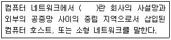
- NAT
- IDS
- VPN
- DMZ
(정답률: 54%)
100. 다음 중 DoS(Denial of Service)에 대한 개념으로 틀린 것은?
- 공격의 원인이나 공격자를 추적하기 힘들다.
- 같은 공격에 대해서 각 시스템 마다 결과가 다르게 나타날 수 있다.
- 루트 권한을 획득하는 공격이다.
- 데이터를 파괴하거나, 변조하거나, 훔쳐가는 것을 목적으로 하는 공격이 아니다.
(정답률: 71%)